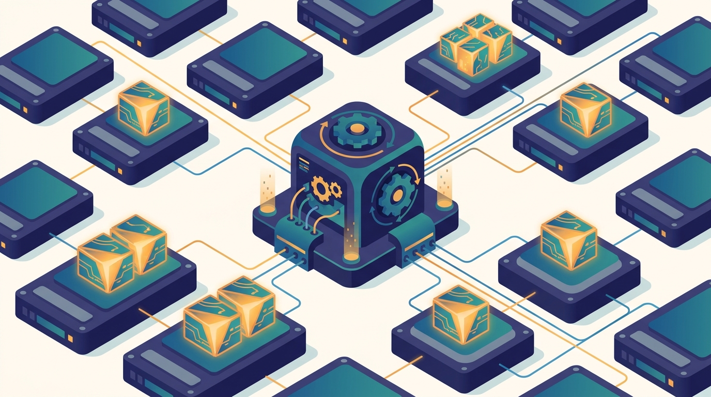

"They benchmarked the model, they benchmarked the network, they benchmarked the optimizer. Nobody benchmarked me, the read path, and so for three weeks a million-dollar cluster waited politely while I fetched one small file at a time."
A Storage Layer That Was the Real Bottleneck All Along
Chapter 7 gave you an engine that keeps data in memory and computes over it fast, but it assumed the data was already laid out well on disk and could be read into the cluster efficiently; this chapter drops below that engine to the storage layer it reads from, where the layout you choose decides how fast any computation can ever begin. The hard truth of large-scale AI is that the storage and read path, not the model and not the network, is often what determines throughput: a training job that starves its accelerators while it waits for bytes runs at a fraction of its peak no matter how good the model is. This chapter builds the layer from the bottom. It starts with why the storage layer sets the ceiling on scale, then the object stores and distributed filesystems that hold petabytes across many machines, then the columnar formats (Parquet, Arrow) and lakehouse tables (Delta, Iceberg) whose layout lets a query skip almost everything it does not need. On top of that it builds the data side of training: how data is sharded across workers, why the DataLoader is the place throughput most often collapses, and how streaming and WebDataset-style pipelines feed shards to the accelerators without a global shuffle. It closes with the parts of preprocessing that genuinely scale out, the correctness traps (leakage across a distributed split is silent and expensive), and the versioning and lineage that make a distributed dataset reproducible. The partitioning you learned to control inside Spark in Chapter 7 turns out to start here, on disk, and how you store the data sets the speed limit for every engine, Spark included, that will ever read it.
Chapter Overview
This is the third chapter of Part II, and it answers a question the first two quietly deferred: where does the data live, and how does it get to the compute fast enough? MapReduce and Spark both assume an input that has already been written somewhere readable, partitioned somehow, in some format. This chapter makes those assumptions the subject. The motivating fact is concrete and uncomfortable: on a large cluster, the bytes-per-second the storage layer can deliver is frequently the real ceiling on throughput, and an accelerator that waits on I/O is an accelerator you paid for and did not use.
The chapter develops the layer from the bottom up. It opens with why storage determines scale, the read-amplification and bandwidth arithmetic that decides whether a query touches gigabytes or terabytes. It then describes the substrate: object storage and distributed filesystems, their flat-namespace, high-throughput, eventually-consistent character and how it differs from a POSIX disk. On top of that substrate it builds the columnar formats and the lakehouse, Parquet and Arrow for compact scannable layout, Delta and Iceberg for transactional tables over object storage, and the data layout, partitioning, and compaction that decide how much of a table a query must read. The second half turns to training: sharded training data and the DataLoader bottleneck where throughput most often dies, streaming and WebDataset-style pipelines that turn random access into sequential reads, the distributed preprocessing that scales out cleanly and the parts that do not, the silent correctness failures of leakage and duplication across a distributed split, and the versioning and lineage that make a petabyte-scale dataset something you can reproduce.
Read in order, the nine sections take you from "the storage layer is the bottleneck nobody benchmarked" to a working command of how to lay out, store, shard, and stream data for distributed AI: the layer beneath the engine of Chapter 7, and the foundation that the streaming systems of Chapter 9 turn from static files into live feeds.
Prerequisites
This chapter sits directly on the two that precede it in Part II, and it assumes you have read them. From Chapter 6: The MapReduce Model and Distributed Algorithms you carry the idea that data is partitioned across machines and that an all-to-all shuffle is expensive, which is exactly why a good on-disk layout that avoids shuffles matters so much. From Chapter 7: Spark and Distributed DataFrames you carry partitioning, caching, and the cost of a scan; this chapter shows that the partitioning you tuned inside Spark begins on disk in the file layout, and that predicate pushdown and column pruning are only possible because the storage format was designed for them. You also lean on Part I: the partial-failure and consistency vocabulary of Chapter 2: Distributed Systems Concepts for AI (object stores are eventually consistent, and that shapes how lakehouse tables commit), and the bandwidth, latency, and communication-cost lenses of Chapter 3 and Chapter 4 that you use to judge whether a read path can keep the accelerators fed. The chapter assumes comfortable Python (the loading code is PyTorch-style), basic familiarity with files and serialization, and no prior experience with object storage, columnar formats, or any data-lake system; the mathematical background is refreshed in Appendix A: Mathematical Background.
Learning Objectives
- Explain why the storage and read path, rather than the model or the network, frequently sets the ceiling on distributed training and analytics throughput, and estimate read amplification for a given layout.
- Describe object storage and distributed filesystems, their flat namespace, high aggregate throughput, and eventual consistency, and contrast them with a POSIX local disk.
- Use columnar formats (Parquet, Arrow) and lakehouse tables (Delta, Iceberg) for scannable, transactional data, and explain how column pruning and predicate pushdown skip data a query does not need.
- Choose a data layout, partitioning scheme, and compaction strategy that minimize how much of a table a query must read, and diagnose the small-files problem.
- Shard training data across workers correctly, and identify why the DataLoader is the place training throughput most often collapses.
- Build a streaming or WebDataset-style input pipeline that turns random access into sequential shard reads and overlaps I/O with computation to keep accelerators busy.
- Recognize the silent correctness failures of a distributed pipeline, leakage and duplication across a split, and apply versioning and lineage so a petabyte-scale dataset is reproducible.
If you keep one thing from this chapter, keep this: how you store and lay out the data sets the speed limit for every engine that reads it, so the layout, the format, the sharding, and the streaming pipeline are not plumbing details but the throughput design of the whole system. Read forward, the sections build the idea in layers: first the read-path arithmetic that makes storage the ceiling, then the object stores and filesystems that hold the bytes, then the columnar formats and lakehouse tables and the partitioning and compaction that decide how little of the data a query must touch, then the sharding and DataLoader and streaming pipeline that carry bytes to the accelerators without starving them, and finally the leakage, versioning, and lineage that keep a distributed dataset correct and reproducible. Read as a question, the chapter asks of any data pipeline: how much is each read amplifying, where do the shards come from, and is the read path keeping the compute fed, and that question is the one you carry into every training and serving system in the rest of the book. The roadmap below walks the nine sections that build that habit of mind.
Chapter Roadmap
- 8.1 Why the Storage Layer Determines Scale Names the cost that motivates the whole chapter, the bytes-per-second the storage layer can deliver, and shows how read amplification and bandwidth, not the model, often set the real ceiling on throughput.
- 8.2 Object Storage and Distributed Filesystems Describes the substrate that holds petabytes across many machines, the flat-namespace, high-throughput, eventually-consistent object store and the distributed filesystem, and how each differs from a POSIX disk.
- 8.3 Columnar Formats and the Lakehouse Builds the scannable layer, Parquet and Arrow for compact columnar layout and Delta and Iceberg for transactional lakehouse tables, and explains how column pruning and predicate pushdown skip what a query does not need.
- 8.4 Data Layout, Partitioning, and Compaction Controls how a table is split into files and directories so a query reads as little as possible, and confronts the small-files problem that compaction exists to fix.
- 8.5 Sharded Training Data and the DataLoader Bottleneck Shows how training data is sharded across workers and why the DataLoader, not the model, is the place throughput most often collapses when the read path cannot keep the accelerators fed.
- 8.6 Streaming and WebDataset-Style Pipelines Turns random access into sequential shard reads with WebDataset-style tar shards and streaming datasets, overlapping I/O with computation so the input pipeline never stalls the training loop.
- 8.7 Distributed Preprocessing Separates the preprocessing that scales out cleanly from the parts that resist it, and places transformation where it belongs in the pipeline between storage and the accelerators.
- 8.8 Data Leakage and Correctness in Distributed Pipelines Exposes the silent failures of a distributed split, train-test leakage and duplication across shards, that quietly inflate metrics, and the discipline that keeps a distributed dataset honest.
- 8.9 Data Versioning and Lineage Makes a petabyte-scale dataset reproducible, tracking versions and the lineage of every transformation so a result can be tied back to the exact bytes that produced it.
Read the nine sections in order and you will hold a working command of how data is stored, laid out, sharded, and streamed for distributed AI: Section 8.1 names the cost that justifies the layer, Section 8.2 describes the object stores and filesystems that hold the bytes, Sections 8.3 and 8.4 build the columnar and lakehouse layout and the partitioning that makes a scan cheap, Sections 8.5 and 8.6 carry shards to the accelerators without starving them, and Sections 8.7 through 8.9 place preprocessing, guard correctness, and make the dataset reproducible. The thread to watch is the partitioning of Chapter 7: it does not begin in the engine, it begins here on disk in Section 8.4, and the read path you design here returns as the data-loading constraint on the data-parallel training of Chapter 15.
What's Next?
This chapter treated data as something at rest: files written, laid out, and read back from storage, however large the pile. But a growing share of AI runs on data in motion, events arriving continuously that must be processed as they land rather than batched and stored first. That shift is where the next chapter begins. Chapter 9: Stream Processing and Online AI turns the static shards of this chapter into live streams: the difference between batch and stream processing, events and windows and the gap between event time and processing time, the Kafka-style distributed log that carries the events, the streaming engines (Spark Structured Streaming, Flink) that compute over them, and the online feature computation and real-time inference that close the loop. The sharding and read-path thinking you built here carries straight over; a stream is just a shard that never ends. Read it next, and watch the data start to move.
Bibliography & Further Reading
Foundational Papers
Ghemawat, S., Gobioff, H., Leung, S.-T. "The Google File System." SOSP, 2003. research.google
The paper that defined the large-scale distributed filesystem, append-heavy, replicated, and built for throughput over latency; the conceptual ancestor of the object stores and filesystems of Section 8.2.
Armbrust, M., Das, T., Sun, L., Yavuz, B., Zhu, S., Murthy, M., Torres, J., van Hovell, H., Ionescu, A., Łuszczak, A., Świtakowski, M., Szafrański, M., Li, X., Ueshin, T., Mokhtar, M., Boncz, P., Ghodsi, A., Paranjpye, S., Senster, P., Xin, R., Zaharia, M. "Delta Lake: High-Performance ACID Table Storage over Cloud Object Stores." VLDB, 2020. vldb.org
The paper behind the lakehouse table, ACID transactions and time travel layered over an eventually-consistent object store; the source for how Delta makes the tables of Section 8.3 reliable.
Aizman, A., Maltby, G., Breuel, T. "High Performance I/O For Large Scale Deep Learning." IEEE Big Data, 2019. arXiv:2001.01858
The WebDataset paper, which turns millions of small samples into sequential reads from tar shards to feed deep-learning training at full I/O bandwidth; the foundation for the streaming pipelines of Section 8.6.
Formats and Lakehouse
Apache Parquet. "Apache Parquet Documentation." parquet.apache.org
The official reference for the columnar storage format at the heart of Section 8.3, including encodings, row groups, and the metadata that makes predicate pushdown and column pruning possible.
Apache Arrow. "Apache Arrow Documentation." arrow.apache.org
The in-memory columnar standard that lets engines exchange data without serialization overhead; the zero-copy companion to Parquet discussed in Section 8.3.
Apache Iceberg. "Apache Iceberg Documentation." iceberg.apache.org
The open table format with hidden partitioning, snapshot isolation, and schema evolution over object storage; the reference for the lakehouse tables and partitioning of Sections 8.3 and 8.4.
Data Loading and Tools
PyTorch. "torch.utils.data Documentation." pytorch.org
The official reference for Dataset, DataLoader, samplers, and worker processes; the concrete API behind the DataLoader bottleneck and sharding of Section 8.5.
NVIDIA. "DALI: Data Loading Library Documentation." docs.nvidia.com
The GPU-accelerated data-loading and preprocessing library that moves decode and augmentation off the CPU; a production answer to the input-pipeline stalls of Sections 8.5 and 8.7.
MosaicML. "Streaming: Fast, Accurate Streaming of Training Data." github.com
The library for streaming shards straight from object storage into distributed training with deterministic shuffling and resumption; the practical complement to the WebDataset pipelines of Section 8.6.
DVC. "Data Version Control Documentation." dvc.org
The tool for versioning datasets and tracking pipeline lineage alongside code in Git; the concrete reference behind the reproducibility discipline of Section 8.9.